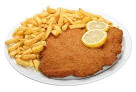

French Fries

Description
Make the best fries Ever !!!
- 1 kilogram of potatoes
- 3 liters of water
- 1 liter per kilo of potato oil for frying
- tablespoons cornstarch
-
Peel the potatoes and cut them into canes, slices, cubes or as you like. Eye: it is important that they are of the same size so that the cooking is even
-
Wash them in plenty of cold water several times to ensure that the potato releases all its juice and does not stick. Then, drain them for approximately 5 minutes and dry them with a (clean) kitchen towel to remove excess water.
-
Place the potatoes washed and free of water in a bowl. This is the moment where we will add the 3 tablespoons of Cornstarch and mix well so that everything is well covered by the Cornstarch
-
To fry it is important to use plenty of very hot oil (approx 170 / 180 °C)
Go Back